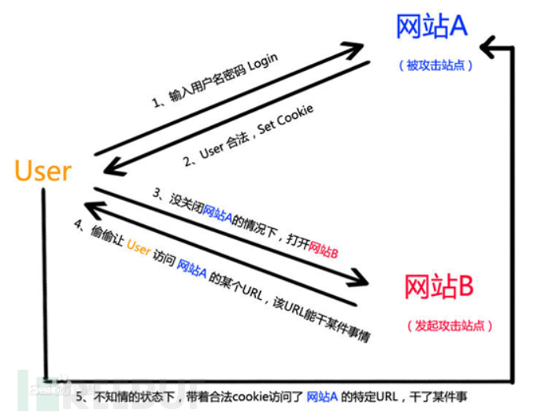

1. 快速判断目标是Linux还是Windows
linux对大小写敏感，
win不敏感，
目录修改一下字母大小写，如果正常访问，大概率是win，不能就可能是linux
2. 站库分离
https://blog.csdn.net/Vdieoo/article/details/109515514
- 从 web 网站打入进而打站库分离的数据库，内网渗透
①. 从 web 入口通常就是通过网站的各种漏洞来 getshell，比如文件上传、命令执行、代码 执行、还有 SQL 注入写入一句话（into outfile、日志备份等）。
②. 在获得 web 权限或者有诸如文件读取等漏洞时，我们还读数据库配置文件、对数据库内 容分析、查找数据库备份，进而对数据库目标 ip 进行渗透，以便后续操作
- 从 web 网站打入进而打站库分离的数据库，内网渗透
- 从数据库打入进而打站库分离的 web 网站，内网渗透
①. MySql
（1）定位 web 端 ip 地址
1 | select * from information_schema.PROCESSLIST; |
在得到了 web 端的 ip 我们可以进而对 web 端进行渗透。
（2）load_file () 获取数据库所在服务器的敏感信息
如果没有 secure_file_priv 参数的限制（MySQL5.7 以下）我们还可以用 load_file() 函数对文件内容进行读取。
1 | select load_file('C:/test.txt'); |
②. MsSql
（1） 判断是否站库分离
得到客户端主机名: select host_name();
得到服务端主机名: select @@servername;
根据结果判断是否分离，结果一样就可能站库同服务器，结果不一样就是站库分离。
3. CSRF
Cross-site requestforgery，也就是跨站请求伪造
XSS攻击是跨站脚本攻击，CSRF攻击是请求伪造，XSS来自用户的手，完成一些操作或者是泄露信息，CSRF攻击本不是出自用户之手，却经过第三方恶意攻击者的处理，伪装成了受信任用户的“亲历亲为”。两者的关系属于 ，XSS是实现CSRF的诸多途径中的一条，但并不是唯一的一条。
常见的CSRF在用户修改密码的地方

防御：
来自：https://tech.meituan.com/2018/10/11/fe-security-csrf.html
CSRF通常从第三方网站发起，被攻击的网站无法防止攻击发生，只能通过增强自己网站针对CSRF的防护能力来提升安全性。
CSRF的两个特点：
- CSRF（通常）发生在第三方域名。
- CSRF攻击者不能获取到Cookie等信息，只是使用。
针对这两点，我们可以专门制定防护策略，如下： - 阻止不明外域的访问
同源检测
Samesite Cookie - 提交时要求附加本域才能获取的信息
CSRF Token
双重Cookie验证
CSRF TOKEN：
CSRF Token的防护策略分为三个步骤：
- 将CSRF Token输出到页面中
- 页面提交的请求携带这个Token
- 服务器验证Token是否正确
4. SSRF
Server Side RequestForgery，服务器端请求伪造
它是一种由攻击者构造形成，由服务端发起请求的一个安全漏洞。因为它是由服务端发起的，所以它能够请求到与它相连但与外网隔离的内部系统。由于服务端提供了从其他服务器应用获取数据的功能（例如分享等功能）且没有对目标地址做过滤与限制，给予了攻击者乘虚而入的机会。比如从指定URL地址获取网页文本内容，加载指定地址的图片，下载等等。SSRF是利用存在缺陷的web应用作为代理攻击远程和本地的服务器。
SSRF的受害对象主要是一些服务器所连接的一些内网设备，如内网的应用程序，通过file协议获得内部网络的资料等
防御：
1.将URL进行解析转化成IP，并使用正则表达式表示内网网址，并以此进行URL过滤。
2.建立URL白名单，只允许白名单上内容通过过滤。
3.建立内网IP黑名单，阻止对该IP的请求。
4.对返回内容进行过滤，减少敏感内容暴露。
5.禁止不需要的协议，只允许http和https协议的请求，减少file等协议的问题。
5. XSS防御
HttpOnly 最早是由微软提出，并在 IE 6 中实现的，至今已经逐渐成为一个标准，各大浏览器都支持此标准。具体含义就是，如果某个 Cookie 带有 HttpOnly 属性，那么这一条 Cookie 将被禁止读取，也就是说，JavaScript 读取不到此条 Cookie，不过在与服务端交互的时候，Http Request 包中仍然会带上这个 Cookie 信息，即我们的正常交互不受影响。
XSS的防御分输入和输出两方面
https://juejin.cn/post/6844903684900388871#heading-7
输入
格式检验，例如用户名只能以字母和数字组合，手机号码只能有 11 位且全部为数字，否则即为非法。
白名单检测
匹配XSS特征
输出
HTMLEncode
JavaScriptEncode
6. sql预编译
一条sql语句的执行需要经过语义解析，制定执行计划，执行并返回结果。
预编译是指把要执行的sql语句先进行一个解析,解析语法以及确定查询范围还有查找的返回结果类型，就是确定了查询的方式，把命令和参数进行了分离，使用预编译的sql语句来进行查询直接进行执行计划，不会在进行语义解析，也就是DB不会在进行编译，而是直接执行编译过的sql。只需要替换掉参数部分。
预编译使用错误
预编译只是使用占位符替代的字段值的部分，如果第一次交互传入的命令使用了字符串拼接，使得命令是攻击者可控的，那么预编译不会生效。部分参数不可预编译
在有的情况下，数据库处理引擎会检查数据表和数据列是否存在，因此数据表名和列名不能被占位符所替代。这种情况下如果表名和列名可控，则可能引入漏洞。预编译实现错误
部分语言引擎在实现上存在一定问题，可能会存在绕过漏洞。
7. nmap扫码方式、种类
- 端口扫描技术
-sS（TCP SYN 扫描/半开扫描）
-sT（TCP connect()扫描）
-sU（UDP 扫描）
-sN、-sF、-sX（TCP Null、FIN、Xmas 扫描）
-sA（TCP ACK 扫描）
-sW（TCP 窗口扫描）
-sM（TCP Maimon 扫描）
–scanflags（定制的 TCP 扫描）
-sI（Idel 扫描）
-sO（IP 协议扫描）
-b（FTP 弹跳扫描）
- 服务版本探测
-sV（版本探测）
–allports（不为版本探测排除任何端口）
–version-intensity
–version-light （打开轻量级模式）：
–version-all （尝试每个探测）：
–version-trace（(跟踪版本扫描活动）：
-sR（RPC 扫描）
8. mysql的提权方式
https://blog.csdn.net/he_and/article/details/81434865
mof提权
1.原理
在windows平台下，c:/windows/system32/wbem/mof/nullevt.mof这个文件会每间隔一段时间（很短暂）就会以system权限执行一次，所以，只要我们将我们先要做的事通过代码存储到这个mof文件中，就可以实现权限提升。
2.利用条件
mysql用户具有root权限(对上面那个目录可写）
关闭了secure-file-priv
udf提权
1.原理
UDF提权是利用MYSQL的自定义函数功能，将MYSQL账号转化为系统system权限
2.利用条件
mysql < 5.0，导出路径随意。
5.0 <= mysql < 5.1，udf.dll 则需要导出至目标服务器的系统目录 (如：c:/windows/system32/)
查看路径：
1
show variables like '%plugin%';
mysql > 5.1，udf.dll 必须要把udf.dll文件放到MySQL安装目录下的lib\plugin文件夹下才能创建自定义函数。
掌握mysql数据库的账户，从拥有对mysql的insert和delete权限，以创建和抛弃函数。
拥有可以将udf.dll写入相应目录的权限。这一条件主要是要看 secure_file_priv的值
1
show global variables like 'secure%';
当secure_file_priv的值为NULL或/tmp/时，此时无法提权
当secure_file_priv的值没有具体值时，则可以提权
udf文件路径：
- sqlmap：sqlmap根目录/data/udf/mysql
- msf：MSF根目录/embedded/framework/data/exploits/mysql
- 网页16进制：国光大佬写的https://www.sqlsec.com/tools/udf.html
9.mysql getshell的方式
条件
root权限
绝对路径
文件写入 secure_file_priv参数
方式
慢查询，写日志，
dumpfile()
outfile()
10. linux 计划任务
1.一次性任务计划：at
2.周期性任务计划：crontab
11. 代码审计
简单浏览网站目录结构
简单看完目录后，我会看主页的index.php，在看这个文件的同时，我还会打开它的网页，做到一边看代码，一边看网页的效果
看用户输入，找功能点，找敏感函数
12.
9. wireshark过滤规则
IP：
源、目的IP为xxx
ip.addr == 172.16.0.0/16
ip.src == 172.16.0.0/16
ip.dst == 192.168.0.0/16
端口：
方法一样，但是需要区别TCP和UDP
TCP.port == 80
UDP.port == 3702
TCP.srcport == 80
tcp.dstport == 80
……
协议：
协议直接输就行了
tcp
icmp
dns
snmp
……
10. 宽字节注入
留坑
11. RSA加密过程
留坑